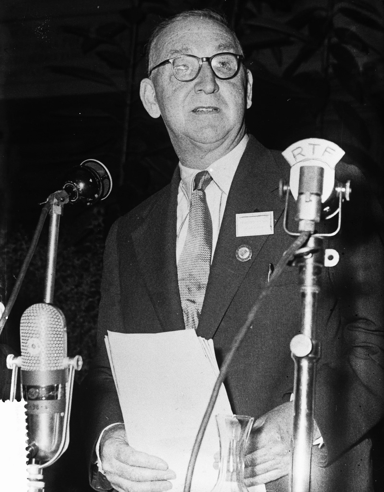
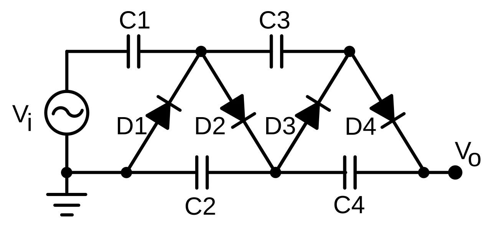
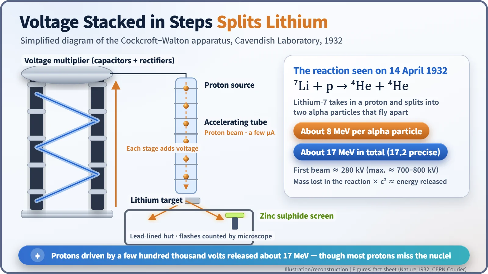
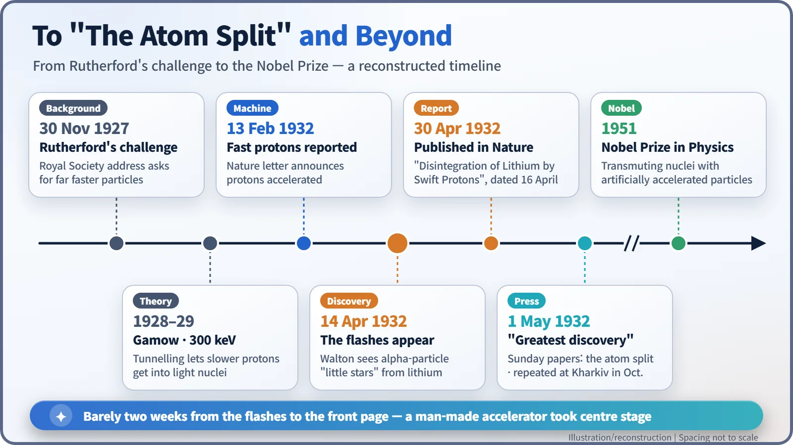
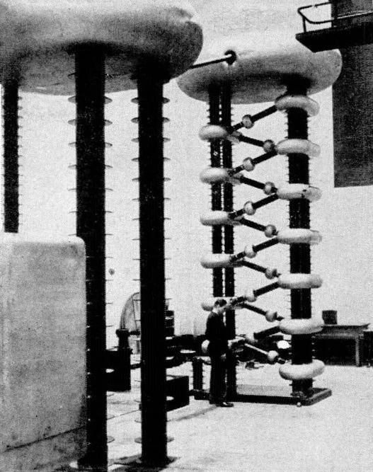
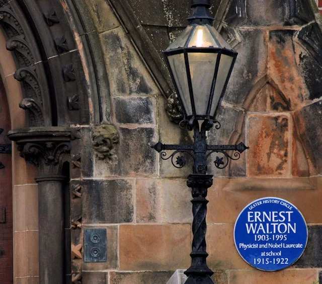

Nuclear History · 046
"The Atom Split. But World Still Safe." — Cockcroft, Walton and the First Accelerator-Driven Nuclear Reaction (1932)
A tower of capacitors and rectifiers drove protons into lithium, Walton saw 'a whole lot of little stars', and the papers announced that the atom had been split.
On 14 April 1932, at the Cavendish Laboratory in Cambridge, Ernest Walton saw tiny flashes on a screen: lithium nuclei, struck by protons from a machine he and John Cockcroft had built, were breaking into two alpha particles. It was the first nuclear reaction driven by artificially accelerated particles, and the newspapers called it "splitting the atom".
A headline to remember
On Sunday 1 May 1932, British readers found a remarkable headline in the Sunday Express: "The Atom Split. But World Still Safe." Reynolds's Illustrated News went further, splashing "SCIENCE'S GREATEST DISCOVERY" across its front page and suggesting that "the limitless energy thus released may transform civilisation." Behind the fuss were two young physicists in Cambridge and a towering electrical machine they had been wrestling with for more than three years. [7]

"Give me bullets stronger than alpha particles"
In the 1920s, the only "bullets" physicists could fire at atomic nuclei were alpha particles shot out by radioactive substances such as radium. In 1919 Ernest Rutherford (1871–1937) had used them to change nitrogen nuclei, but nature dictated both how fast and how many those bullets were. In an address to the Royal Society on 30 November 1927, Rutherford, by then director of Cambridge's Cavendish Laboratory, said it had long been his ambition to have "a copious supply of atoms and electrons which have an individual energy far transcending that of the α and β-particles from radioactive bodies." [8]
The obstacle was voltage. Common sense said that pushing a charged particle into a nucleus would take millions of volts. Then George Gamow's quantum tunnelling came to the rescue: if particles can "leak" through an energy barrier rather than climb over it, far lower energies might do. John Cockcroft (1897–1967), who had trained as an electrical engineer before turning to physics, ran the numbers and found that protons of about 300,000 electronvolts (300 keV) stood a real chance of entering a light nucleus such as boron. Rutherford put him and Ernest Walton (1903–1995), a young Irish researcher, to work building the machine. [3]
A machine that stacks voltage like stairs
A transformer installed at the end of 1928 broke down at around 280,000 volts. So the pair changed tack. They built a tower of capacitors (components that briefly store electric charge) and rectifiers (valves that let current flow only one way), arranged so that each stage added its voltage to the one below. The result was a steady direct voltage several times higher than the supply. The principle had been worked out earlier by the Swiss physicist Heinrich Greinacher, but Cockcroft and Walton turned it into a giant research instrument, and it is still called the Cockcroft–Walton multiplier today. [8]

It sounds neat on paper. In practice it was a war against sparks: high-voltage discharges cracked the glass tubes, and every vacuum leak meant starting again. Walton did much of the patching. In February 1932 they reported in Nature that they could produce fast protons, and from March they began firing at targets in earnest. At first they hunted for gamma rays and found none, and Rutherford, frustrated, pressed them for results. [3] [5]
14 April 1932: little stars under the microscope
On 14 April 1932, Walton slid a lithium target into the beam and crawled into a small lead-lined wooden hut beneath the accelerating tube. Inside, he peered through a microscope at a zinc sulphide screen. "When I looked in through the microscope," he later recalled, "I could see a whole lot of little stars." Each tiny flash was an alpha particle striking the screen. The proton energy for that first observation was about 280 keV, and the effect was later confirmed below 150 keV. [6] [3] [4]
Cockcroft came to look, and then Rutherford, a big man, was squeezed into the hut. According to a story often told in later recollections, he declared that the flashes looked "mighty like" alpha particles, and that he should know one when he saw one. Two days later the pair dated a letter, "Disintegration of Lithium by Swift Protons", which appeared in Nature on 30 April. [1] [5]

Split atom? Fission? What really happened
A lithium-7 nucleus absorbed a proton and almost immediately broke into two helium nuclei (alpha particles), which flew off in nearly opposite directions. Their combined energy came to about 17 MeV (the precise value is 17.2 MeV), dozens of times the energy of the incoming proton. That figure also matched the small loss of mass in the reaction multiplied by c², a check on Einstein's famous equation that we only need to mention in passing here. [2]
The newspaper phrase "splitting the atom", though, was off in two ways. What split was not the atom but its nucleus, and this was not nuclear fission (the splitting of heavy nuclei such as uranium, discovered only at the end of 1938) but an artificial reaction of a light nucleus. Nor was it the first time a nucleus had been transformed: Rutherford had done that in 1919 with natural alpha particles. Cockcroft and Walton's "first" was doing it with particles accelerated by a human-made machine. And since the vast majority of protons sailed past without hitting a nucleus, this was no way to make energy; the world was indeed still safe.

Opening the age of accelerators
Once the news broke, Cockcroft and Walton were besieged by journalists and photographers for days. In October 1932 a team at the Ukrainian Physico-Technical Institute in Kharkiv repeated the experiment. From then on, nuclear physics moved from natural radioactive sources to machines built by people. Voltage multipliers of this kind served for decades as the front-end injectors of larger accelerators and still turn up in high-voltage power supplies, including those for X-ray equipment. [7] [3]

Cockcroft went on to become the first director of Britain's Atomic Energy Research Establishment at Harwell. Walton returned to Trinity College Dublin and spent the rest of his career teaching there. In 1951 the two shared the Nobel Prize in Physics "for their pioneer work on the transmutation of atomic nuclei by artificially accelerated atomic particles." Nineteen years after those little stars, the world had already passed through nuclear fission and the first reactors. [3]
